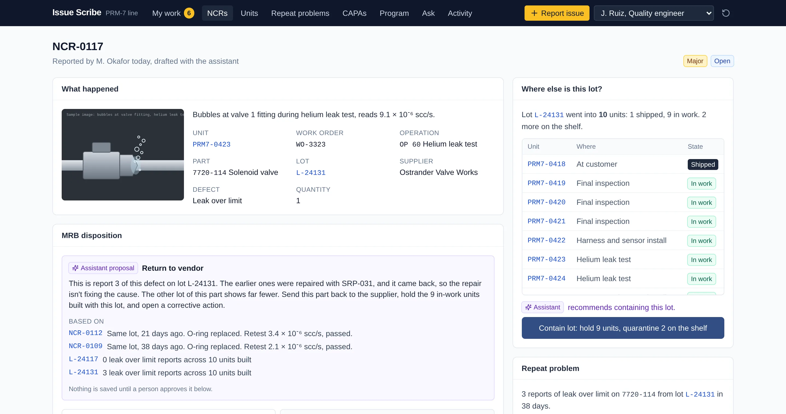
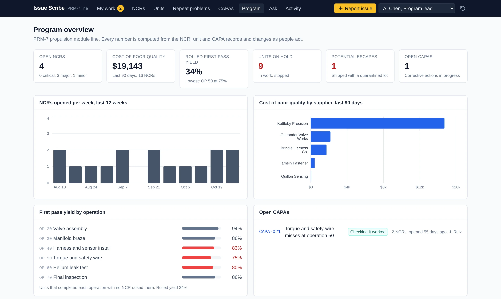
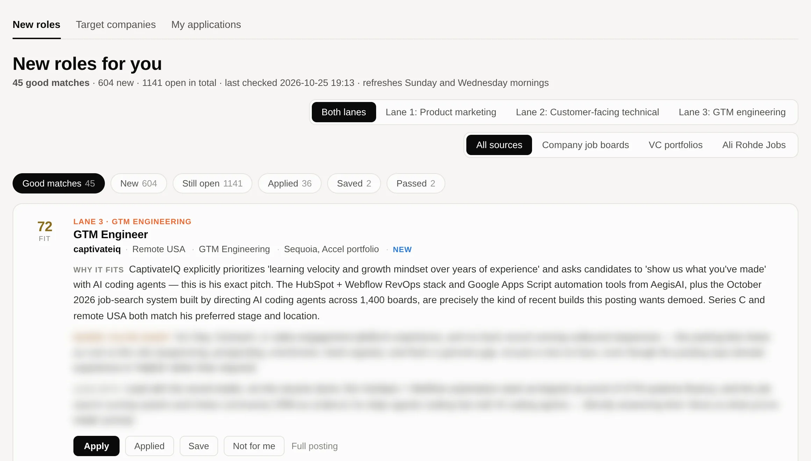
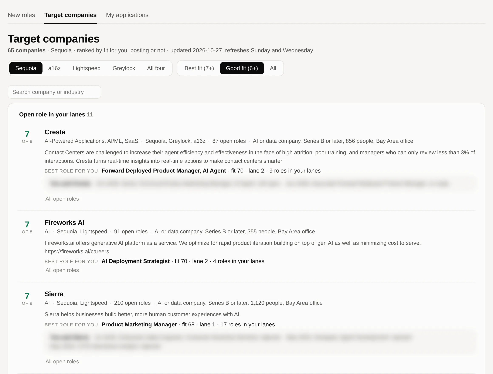
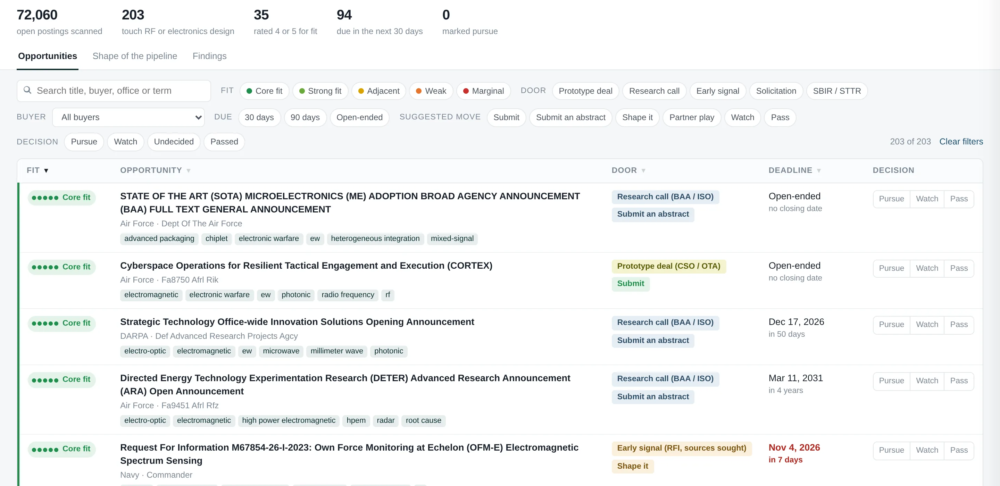
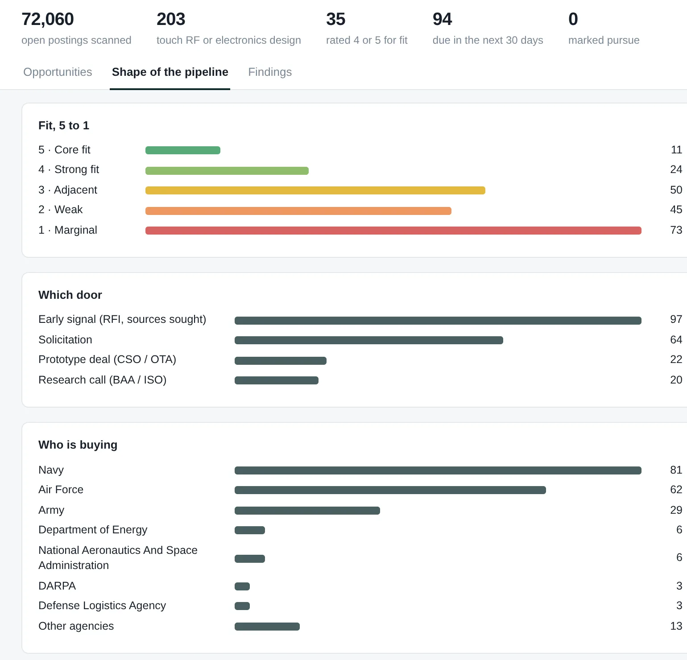
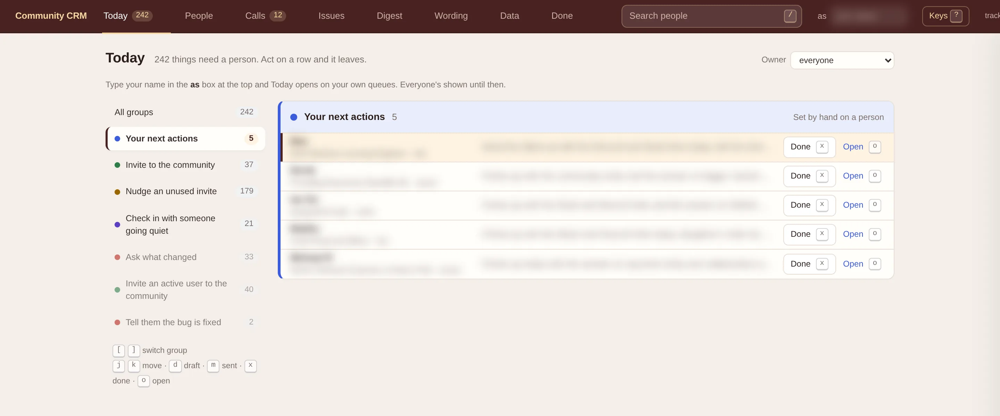

GTM engineering builds, October 2026
Vito Prasad
I started in engineering at SpaceX and Northrop Grumman, moved through strategy consulting at Kearney, and then ran product marketing at an AI security startup, where I built the stack behind our pipeline. These are five tools I built in October 2026 by directing AI coding agents. Four run on real data, and the first two you can try yourself.
vito.prasad@gmail.com/linkedin.com/in/vitoprasad/San Francisco Bay Area
Account-list scanner
Reads the public DNS records of any list of companies and shows which sales, marketing and AI tools each one runs, who is switching, and whose email is about to break. I ran it on 169 of the top startups from the Forbes, LinkedIn and CNBC lists.
What it does
Most go-to-market tools only work once a company points part of its DNS at them. A landing page on Marketo, an events site on Goldcast, a sending service in SPF, a domain verified with ChatGPT. The scanner reads those records and turns them into the three answers a sales team wants about an account. What it uses, whether it is changing, and whether it has a problem the team can fix.
The first scan says the newest startups set up Claude before they buy marketing software. 62% of LinkedIn's 2026 list has Claude, and 46% runs a marketing platform. In the Cloud 100 it is the other way round.
Open the scanner, or check a single company with the email DNS check.
How it works
- Ask public DNS about 80 questions per company, covering marketing subdomains, mail servers, SPF, DKIM, DMARC and verification records.
- Match each answer to a vendor and keep the record behind it, so every claim links to its source.
- Skip anything that only answers because a company points every name at one server.
- Re-scan every morning and log a change only when a second read agrees.
- Run the same code live in a visitor's browser on any list they paste.
Issue Scribe
A product demo of quality software for a hardware production line. A technician reports a defect with a photo and one line, an assistant drafts the report and shows the records behind every suggestion, and a named engineer signs off before anything changes.
What it does
Hardware teams log defects as nonconformance reports. Filing one is not the hard part. The hard part is noticing that three leaks in five weeks came from the same valve lot, finding every unit that lot went into, and stopping the ones still on the floor before another one ships.
In the demo, a leak at test is the third from one supplier lot. The first two were repaired and closed one at a time. The assistant connects them, compares that lot with a clean one, and proposes sending the part back and containing the lot. A quality engineer approves, nine units go on hold, and the one that already shipped gets a customer notice.
I first built it on Lovable in April 2025, in an afternoon. This version rebuilds it around what factory software is expected to show in 2026. Evidence behind each suggestion, a person approving every change, and a full audit trail. It runs on sample data in your browser, and the assistant follows written rules, so every suggestion can be traced.
Open Issue Scribe and follow the 2-minute path on its home page.
How it works
- Keep one set of records (parts, supplier lots, 20 serialized units and what went into each), so every screen agrees.
- Draft each report from the unit's build record and the technician's note, and show why each field was filled in.
- Propose a disposition from past reports on the same part and lot, cite them, and change nothing until a person approves.
- Require a design engineer's sign-off when a part is used off drawing, unless an approved standard repair covers it.
- Log every action with who took it, and mark the ones the assistant proposed.




Job-search pipeline
Pulls every open role from the companies I care about, keeps the ones that fit, and has an LLM score each against a written rubric, so I read 45 good matches instead of 55,000 listings.
What it does
It reads the public job boards behind each company (Greenhouse, Lever, Ashby and others), the portfolio job boards of VC firms like Sequoia, a16z and Accel, and a weekly newsletter. It sorts each role into one of the lanes I apply in and drops the rest before any model call, so the LLM only reads roles worth reading.
Each survivor gets a fit score, the reason it fits, where I fall short, and what to lead with. A second view ranks companies by fit whether or not they are hiring. A third rebuilds my application record from Gmail and Calendar, so I can see which channels turn into conversations.
How it works
- Pull the boards and keep every raw posting, so nothing needs refetching when the rules change.
- Place each role in a lane by its title, and drop the out-of-lane ones with the reason kept.
- Score the rest in batches against the lane's written bar. Promising roles get two reads and keep the average, since one read can swing 10 to 20 points.
- Show the results in a web view with Apply, Save and Not for me, and remember those choices.
- Rebuild the application record from email and calendar, with every row linked to its source message.




Federal-contract pipeline
Built overnight for a business operations interview at a defense hardware startup. It turns the federal government's full list of open opportunities into a short list a small team can act on.
What it does
SAM.gov's search API allows ten calls a day, so the tool pulls the full daily file instead. It filters every posting against the company's own vocabulary, rates fit from 1 to 5, and suggests a move, from submit or shape it to partner, watch or pass.
Fit comes from a four-question scorecard. Does the product solve it, does the buyer have money, how fast could it be awarded, and is there a path to production. Past awards from USAspending nudge the buyer question up or down.
How it works
- Download the daily file and keep it, so every number traces back to the source posting.
- Exclude what the company can't sell into, like spare-parts buys and set-asides it doesn't qualify for.
- Score the rest by term matches, then band the scores into five plain fit levels.
- Classify the "door" (prototype deal, research call, early signal, solicitation) and the deadline.
- Let the team mark Pursue, Watch or Pass, keyed to the solicitation number so decisions survive each refresh.




Onboarding CRM
Built for an AI startup's community team to work through its post-launch waitlist. Every person who needs a touch lands in a queue named for the next action.
What it does
It pulls signups from the team's existing tracker and issues from whole Slack threads, then sorts people into queues like nudge an unused invite or check in with someone going quiet. An LLM writer drafts each follow-up in the team's voice for a person to approve, and a Monday digest sums up the week.
What I'd build next
Product usage per account, so health scores come from real activity instead of a placeholder. Then send and track from the same screen, and close the loop when an issue a user reported gets fixed.

How I build
I decide what each tool should do, the rules it follows, and what counts as right. AI coding agents write the code. I check the output against real data before I rely on it, and I keep the raw records so any number on the screen traces back to where it came from.
Happy to walk through any of these live.
Before this, at an AI email security startup
- Built the HubSpot and Webflow RevOps stack, with automated lead capture and nurture.
- Set up conversion and visitor tracking (Google Analytics, Google Ads, Meta Pixel, UTMs) that traced deals to their campaigns.
- Turned a $500 Google Ads test into a closed five-figure deal.
- Built a Google Apps Script monitor that turned 100+ target accounts' public email records into daily sales alerts. The security engineers later built the idea into their prospect audits. Try a rebuilt version.